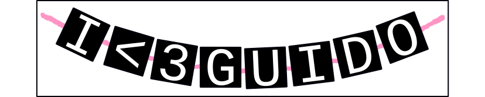

Chapter 5: Loops
"Programming today is a race between software engineers striving to build bigger and better idiot-proof programs, and the Universe trying to produce bigger and better idiots. So far, the Universe is winning."
-Rich Cook
Sometimes your program needs to do the same thing more than once. For example, let's say we want to ask our user for a number between 1 and 10.
- number = raw_input("Give me a number between 1 and 10 ")
But the user might be a jerk, and enter 20 instead. There's nothing stopping them, after all. One idea is to use an if statement, and make sure their number meets our requirements:
- number = raw_input("Give me a number between 1 and 10 ")
- if number < 1 or number > 10:
- number = raw_input("Nice try, but give me a number between 1 and 10 ")
Great! Except the user is a real jerk. The kind of jerk who will enter a wrong number twice. Now what happens? At the end of the program we STILL have a number that isn't between 1 and 10. We could keep adding if statements, but let's face it, that's going to get old in a hurry. There must be a better way. Enter loops.
While
- number = raw_input("Give me a number between 1 and 10 ")
- while number < 1 or number > 10:
- number = raw_input("Nice try, but give me a number between 1 and 10 ")
A while loop checks a condition at the start of the loop. If that condition is true, it does all the code inside. When the code inside is done, it checks the condition again. If the condition is still True, it will do the code inside all over again. If will keep doing the loop until the condition is True at the start of the loop.
That's an important distinction. This loop will run forever:
- a=3
- while a != 4:
- a=4
- a=3
After checking the condition, this loop immediately sets the value of a to 4, but then it changes it back to 3! Even though a gets the value 4, it never has it at the start of the loop, so the loop never ends.
A never ending loop will usually seem like it freezes IDLE. In a terminal window (or command prompt, if you're a Microsoft Windows user), you can press ctrl-c, and it will stop the program. In IDLE, you'll probably need to try to close the window and reopen your program.
While loops are fantastic for when you don't know ahead of time how many times a loop is going to happen. We don't know how many times the user is going to give us a number that doesn't meet our conditions. But what if we did know how many times we wanted something to happen?
For and range()
Let's write a simple program to print the numbers from 1 to 10:
- i = 0
- while i<11:
- print i,
- i+=1
Tada! Notice that we're using 11 in our condition: while i is less than 11, we print i and add 1 on to i, until i reaches 11, when we stop. But we know ahead of time that we're going to need to print 10 numbers. We can simplify this by using a for loop.
- for i in range(1,11):
- print i,
The for loop operates by iterating (going through) a list of things. In this case, we can go through a list of things by using the range() function, which makes us a list starting at 1 and going until (but not including) 11. So what Python actually sees is:
- for i in [1,2,3,4,5,6,7,8,9,10]:
- print i,
Python loops through the list and gives i the values 1 through 10. In fact, the most recent two examples are, for all practical purposes, the exact same program. One's just easier.
We can do other neat tricks with range(). Understand that range() takes in three arguments, and uses those to generate a list. The first argument is the starting number, the second is the stopping number, and the third is the step. We can use the third to generate a list of the even numbers:
- for i in range(2,11,2):
- print i,
2 4 6 8 10
Or to generate a list backwards:
- for i in range(10,0,-1):
- print i,
10 9 8 7 6 5 4 3 2 1
Alternatively, we can use the for loop to loop through things that aren't numbers, like Strings. Let's look at that picture of the bracelet I made for Guido again:
A string is just a collection of letters all tied together. A for loop can loop through each of those letters.
- for i in "I<3GUIDO":
- print i,
I < 3 G U I D O
Sure, it's not a very exciting program, but we could combine it with an if statement and remove all of the vowels:
- for i in "I<3GUIDO":
- if i not in "AEIOU":
- print i,
< 3 G D
Notice how we're using the not and in keywords? They're like magic with lists and Strings. We're checking to see if i is not in the string "AEIOU", which happens to be a list of the vowels.
This website will be taken offline before the end of 2011